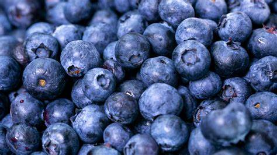

Goal of this Project is to predict Alzheimer's disease based on user input as a Brain MRI image.
The user here has to input a Brain MRI, and the model will classify Alzheimer's in 4
categories. Here we have used a pretrained model `RESNET50`.

Goal of this Project is to predict Plant Seedling based on user input as a Plant image. The user
here has to input a plant image, and the model will classify the plant image in 12 categories.
Here we have used a pretrained model `RESNETV2`.

Goal of this Project is to predict Tumor Classification based on user input as a Brain Image. The
user here has to input a brain image, and the model will classify the brain image in 4
categories. Here we have used a pretrained model `RESNET50`.
Goal of this Project is to predict which crop or fruit one should grow based on nitrogen level,
pH level, temperature, humidity, and rainfall levels.

This project aims to address the problem of classifying a diseased or healthy mango by developing
a
cutting-edge computer vision-based model that provides instant in-field detection and
classification of mango leaf diseases, empowering farmers with timely information to reduce the
losses and enhance their income.

This data set is collected from Addis Ababa Sub-city police departments for master's research
work. The data set has been prepared from manual records of road traffic accidents of the year
2017-20. The task is to classify the Accident Severity.

Recommendation systems are becoming increasingly important in today’s extremely busy world.
People
are always short on time with the myriad tasks they need to accomplish in the limited 24 hours.
Therefore, the recommendation systems are important as they help them make the right choices,
without having to expend their cognitive resources.

Goal of this project is to predict whether the claims made by a customer are fraudulent or not.

Goal of this Project is to find out the Yield based on other parameters. The dataset used for
predictive modelling was generated by the Wild Blueberry Pollination Simulation Model, which is
an open-source.